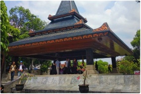

Keunggulan
MAKAM BUNG KARNO
Makam Bung Karno di Kota Blitar, Jawa Timur, merupakan destinasi wisata sejarah yang menjadi peristirahatan terakhir Presiden pertama RI, Ir. Soekarno. Kompleks ini memiliki arsitektur joglo khas Jawa yang tenang, serta dilengkapi fasilitas perpustakaan dan museum untuk mempelajari perjalanan hidup dan perjuangan sang Proklamator.
Selain sebagai tempat ziarah, makam ini berfungsi sebagai sarana edukasi untuk mengenal sejarah bangsa dan menumbuhkan semangat nasionalisme. Mengunjungi destinasi ini memberikan pengalaman berharga dalam menghargai jasa-jasa pahlawan kemerdekaan Indonesia.